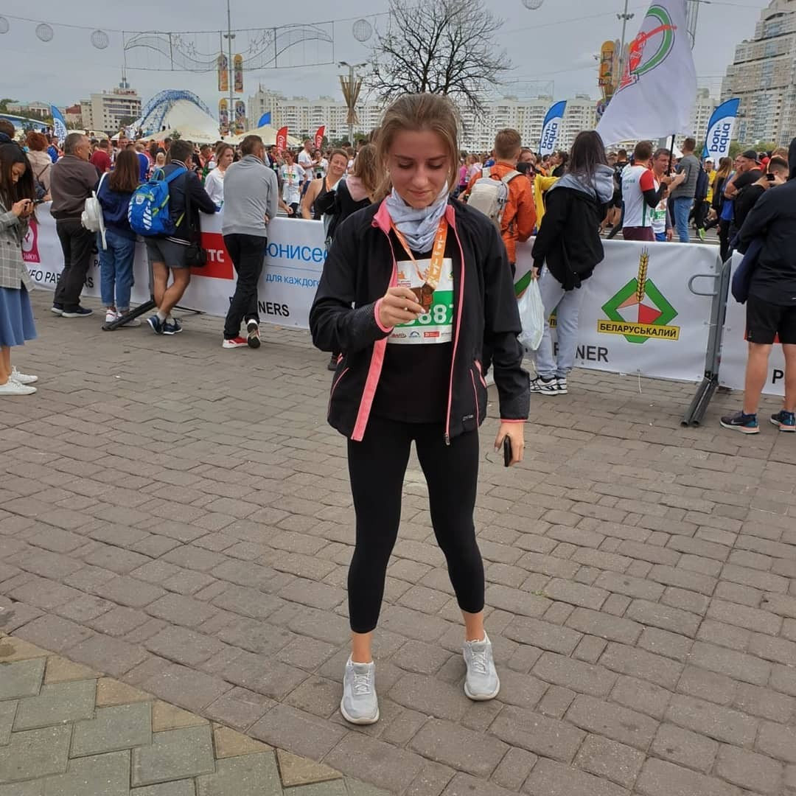

Кондитерство
Недавно исполнилось 5 лет с того дня, когда я приготовила свой первый торт. Как всё началось? Я не верила рекламе формы для выпечки, в которой было множество картинок и видео иедального бисквита. Я не верила, что его можно приготовить в домашних условиях. Решила проверить сама. Теперь верю. Уже как 5 лет.
Биатлон. Люблю. Очень. Ходила год в спортивную секцию, но потом решила, что будет лучше, если я останусь просто фанаткой. Ни капли не жалею об этом.
Бег. Спорт играет важную роль в нашей жизни. Не важно, ты сам спортсмен или любишь смотреть на других. В моём случае, биатлон я смотрю, а сама я бегун-любитель.
| Фамилия | Имя | Отчество |
|---|---|---|
| Пугач | Полина | Сергеевна |
| Крох | Арина | Николаевна |
| Морозова | Анна | Александровна |
| Семенова | Анастасия | Тимофеевна |
| Кот | Полина | Юрьевна |